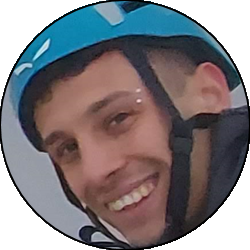

Relazione
| Data Uscita | 03-05-2023, Mercoledì | Area | Grigne |
|---|---|---|---|
| Luogo di Partenza | Parcheggio di via del Ram - Mandello del Lario (LC) | Quota |
1180m (circa) la partenza 1650m (circa) l'attacco 1743m la cima |
| Dislivello | 600m | Tempi | 04:30 ore (01:30 ore la via) |
| Esposizione | Nord, Est | Difficoltà Tecnica | IV+ (IV/A0) |
| Punti di Appoggio | Rifugio Rosalba | Acqua | No |
| Partecipanti |
 Alex,
 Maraja, Maraja,
 Oracolo Oracolo
|
||
(clicca sull'immagine per scarica la traccia GPS)
Accesso
Da Lecco salire in Valsassina fino a Ballabio. Alla rotonda all'ingresso del paese prendere verso sinistra e subito dopo a destra salendo poi per i tornanti fino ai Piani Resinelli. Superato il piazzale (grande parcheggio) all'altezza della chiesa prendere la strada che la costeggia a destra (in piano) e seguirla fino a dove questa diventa carrareccia presso una stanga (indicazioni rifugio Rosalba). Parcheggiare sul lato sinistro (faccia a valle) facendo attenzione a non intralciare il passaggio, oppure prima sempre sulla strada.
Avvicinamento
Seguire la carrareccia che si inoltra prima tra le case, poi in un bel bosco in falsopiano fino a un pezzo in discesa dove si incrocia il canalone della val Tesa. Seguire il sentiero che lo attraversa e prosegue a saliscendi fino a un cartello che indica il bivio tra il sentiero delle Foppe e quello dei Morti.

Seguire l'uno o l'altro sentiero indifferentemenete, quello dei Morti è più ripido ma più corto. Arrivare fino al cartello appena sotto al rifugio dove i due sentieri si ricongiungono, e abbandonare il sentiero per scendere qualche metro nel canale che porta fino alla base delle rocce del gruppo Cinquantenario-Cecilia. La via Normale attacca circa 5-10m a sinistra di una ben visibile targa, presso un saltino con ben visibile un resinato a una manciata di metri da terra.

Via
L1: salire la facile placchetta e aggirare il saltino verticale verso destra, sempre su basse difficoltà. Proseguire su roccette appoggiate e arrivati a una sosta con catena rinviarla lunga e traversare decisamente verso destra, aggirando un tettino e infilandosi nel canale che costeggia tutto il lato Nord del Cinquantenario. Saltare una sosta su due fix e sostare pochi metri dopo sul bordo del canale su 2 resinati con catena.
» 45m, 3 resinati, 2 soste intermedia (2 resinati + catena e 2 fix) (III, II, I)
» 45m, 3 resinati, 2 soste intermedia (2 resinati + catena e 2 fix) (III, II, I)

L2: attraversare il canale con un passo in spaccata (resinato), e salire poi l'evidente rampa (saltare la prima sosta intermedia) che poi diventa diedro, fino a quando questa esce su un terrazzino con un'altra sosta intermedia. Traversare ora decisamente verso destra (con un passo in discesa) per cengetta, fino al terrazzone posto alla base della cuspide finale del Cinquantenario. Sosta su due resinati da collegare.
» 45m, 5 resinati, 2 soste intermedia (2 resinati + catena) (II, III, I)
» 45m, 5 resinati, 2 soste intermedia (2 resinati + catena) (II, III, I)

L3: salire appena a sinistra della sosta con passo delicato, poi via via più facile fino a un terrazzino intermedio, dove si va verso sinistra salendo in piedi su uno spuntone sotto alla placchetta finale. Affrontare direttamente la placchetta finale (IV+, 2 resinati, possibilità di A0) fino a prendere una buona presa che consente di arrivare sulla piccola e aerea cima. Sosta su 2 resinati con catena appena sotto alla campana di vetta.
» 20m, 5 resinati (IV, III p. IV+/A0)
» 20m, 5 resinati (IV, III p. IV+/A0)

Discesa
Effettuare una breve calata per tornare alla S2 (sufficiente una mezza corda). Tornare ora verso la seconda sosta saltata in L2 (facile, ma consigliabile fare un mezzo tiro per l'esposizione) e da qui calarsi a seconda delle corde che si hanno: con due mezze ci si può calare direttamente verso il largo canale con una doppia da 40m (in parte nel vuoto, molto bella). In alternativa con due calate sulla via di salita (usare entrambe le soste saltate) si arriva sempre nel canale ma poco a monte. Dirigersi ora verso la sosta saltata in L1 (anche qui, meglio fare un mezzo tiro anche se le difficoltà son basse) e con una breve doppia da 15m si ritorna all'attacco.

Tornare alla macchina seguendo i sentieri dell'avvicinamento. Solitamente per comodità si preferisce fare quello delle Foppe, ma si può anche fare quello dei Morti indifferentemente.